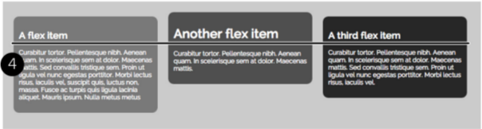
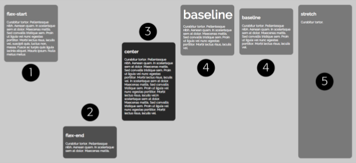

CSS flexbox 布局
Flexbox, short for flexible box, adds another layout mode called flex layout.
- 支持
- Internet Explorer 11 and up
- Chrome, Safari, Opera, and Firefox
- 支持，但是要加 vendor prefix
- Safari
Flexbox Basics
On the surface, flexbox is pretty simple. There are only two components you need
to make it work:
-
The Flex container.
Any HTML element can be a flex container, but usually you’ll use a <div> or some
other structural HTML tag. The tag you use for the flex container will contain
children and other tags that make up the second part of the flexbox model. -
Flex items.
- Every direct child of the container element is automatically turned into a flex item.
- the child tags 可以是任务tag，也可以不是同一种类型的 type.
- 只有children tags 可以成为 flex items，grandchildren tags 不行。
例子
1 2 3 4 5 | <div class="container"> <div>A flex item</div> <div>Another flex item</div> <div>A third flex item</div> </div> |
Unfortunately, at the time of this writing, Safari requires a vendor prefix for this
property, so to make the above CSS work in all current browsers including Safari,
you would write:
1 2 3 4 | .container { display: -webkit-flex; display: flex; } |
1 2 3 4 5 6 7 | /* make the divs inside the container the same width and fill up the container by simply giving those divs a flex property with a value of 1 */ .container div { -webkit-flex: 1; flex: 1; } |
1 2 3 4 5 6 7 | /* This nth-of-type selector simply selects every div starting at the second one 1n+2 表示从第二个开始，除1余数为0 */ .container div:nth-of-type(1n+2) { margin-left: 20px; } |
Flex Container Properties
display 属性值 flex
1 2 | display: -webkit-flex display: flex; |
Flex-Flow
Flex items 缺省情况下，水平排列，且一直不换行。
flex-flow property 控制 flex items 垂直或者水平排序，是否可以换行。
- Flex-flow requires two values, separated by a space.
- The first is the direction, there are four possible settings:
- row is the normal setting. It displays flex items side by side, with the first item in the HTML source code being the left-most item, and the last item in the HTML source on the right.
- row-reverse also displays the flex items side by side, but reverses their order on screen. In other words, the last item to appear in the HTML source appears on the leftmost side of the container, and the first item in the HTML source appears at the right side of the container.
- column displays the flex items as stacked blocks one on top of the other. 和div标签的默认效果一样。在respective 布局的时候，比较方便，手机屏幕使用column方式，电脑屏幕使用row方式。
- column-reverse 和 column 类似，除了 flex items 堆叠的方向是从下而上的。
- the second is whether the item can wrap. There are three possible values:
- nowrap 默认行为，就是不换行，不管窗口有多小，就是全部挤到里面。
- wrap lets items that don’t fit inside the container’s width drop down to a new
row (or over to a new column) as pictured in the top image in Figure 17-4. In
order for flex items to wrap onto new rows (or columns), you’ll also need to set
some values on the flex items. - wrap-reverse is like the wrap option, but wraps items in a reverse order.
- The first is the direction, there are four possible settings:
flex-direction , flex-wrap
1 2 3 4 5 6 | flex-flow: row wrap; /* 等价于 */ flex-direction: row; flex-wrap: wrap; |
Justify-content
- The
justify-contentproperty determines where a browser should place the flex items within the row. - This property only works if the flex items have set widths and if the total width of the items is less than the flex container.
- If you’re using
flex widthsfor flex items, the justify-content property has no effect at all.
There are five possible values for this property:
flex-startaligns items to the left of the row. Confusingly, if you choose therow-reversedirection, the flex-start option aligns all items to the left.flex-endaligns items to the right side of the row, unless of course you set therow-reversedirection, in which case it aligns items to the left.centercenters the flex items in the middle of the containerspace-betweenevenly spaces out the flex items, dividing the space between them equally while aligning the leftmost item to the left and the rightmost item to the right. This is a great option for displaying a series of buttons that fill the entire width of a container.space-aroundevenly distributes the leftover space within the container around all the items adding space to the left- and rightmost items as well
参见如下示例，示例代码演示的是第五行 space-around
1 2 3 4 5 6 7 8 9 | .container { display: -webkit-flex; display: flex; -webkit-justify-content: space-around; justify-content: space-around; } .container div { width: 200px; } |
Align-items
- The
lign-itemsproperty determines how flex items of different heights are vertically placed within a flex container. -
By default, flex items stretch to fit the container, so are all equal heights
- 可能的值：
flex-startaligns the tops of all flex items to the top of the containerflex-endaligns the bottoms of all flex items to the bottom of the containercenteraligns the vertical centers of all flex items to the vertical center of the containerbaselinealigns the baseline of the first element within each flexstretchis the normal behavior of flex items. It stretches each item in the con-
tainer to the same height
- 代码示例
1 2 3 4 5 6
.container { display: -webkit-flex; display: flex; -webkit-align-items: flex-end; align-items: flex-end; }
- baseline 的补充说明，对齐的是第一行的baseline，如下图
- 
Align-content
- The
align-contentproperty dictates how a browser places flex items that span over multiple lines. - 2 个条件满足时，这个属性才有效：
- the flex container must have wrap turned on
- the flex container must be taller than the rows of flex items
- 可能的值：
flex-startplaces the rows of flex items at the top of the flex containerflex-endplaces the flex item rows at the bottom of the containercenteraligns the vertical center of all rows to the vertical center of the containerspace-betweenevenly distributes extra vertical space between the rows, placing the top row at the top of the container and the bottom row at the bottom of the containerspace-aroundevenly distributes space on the top and bottom of all rows. This adds space above the top row and below the bottom rowstretchis the normal behavior of rows of flex items. It stretches each item within a row to match the height of the other items in the row.
- 代码示例，make sure that the flex-flow property includes the wrap option
1 2 3 4 5 6 7 8 9
.container { display: -webkit-flex; display: flex; -webkit-flex-flow: row wrap; flex-flow: row wrap; -webkit-align-content: space-between; align-content: space-between; height: 600px; }
Flex Item Properties
The Order Property
-
The order property lets you assign a numeric value to a flex item which dictates where within the row (or column) this item should appear.
-
示例代码
1 2 3 4 5 6 7 8 9 10 11 12 13 14 15 16
.order-1 { order: 1; -webkit-order: 1; } .order-2 { order: 2; -webkit-order: 2; } .order-3 { order: 3; -webkit-order: 3; } .order-4 { order: 4; -webkit-order: 4; }
1 2 3 4 5 6 7
<div>使用order属性变换顺序</div> <div class="flex-basic-container"> <div class="order-4">1</div> <div class="order-3">2</div> <div class="order-1">3</div> <div class="order-2">4</div> </div>
order: -1;
However, sometimes you might want to just move one column to the far left or far
right of a row. In that case, you can simply set the order on that particular item, but
not on any others
Using -1 moves the item to the left side of the flex container, before all of the other
rows. Conversely, you could move that same sidebar to the far right by setting its
order number to 1, while leaving the other elements’ order properties unset.
1 2 3 4 | .sidebar1 { -webkit-order: -1; order: -1; } |
Align-self
- The align-self property works just like the align-items property used for flex
containers. 不同的是，align-selfapplies to just the individual flex item. - You apply the property to an item (not the container) and it overrides any value for the align-items property.
- You apply the property to an item (not the container) and it overrides any value for the align-items property.

Flex 属性
This property is the key to controlling the width of flex items; it lets you easily create columns that “flex,” or change width to match the size of their container, even when the size is unknown or dynamic.
- it’s really a shorthand property that combines three other flex properties.
flex-grow, 是个数字， indicates the relative width of that flex item. 表明item在container中所占宽或长的比重。flex-shrink, 2nd value， 也是个数字.- 这个属性起作用要满足2个条件：
- 当容器总宽小于items宽的总和的时候，
- 且容器的
flex-flow属性包含nowrap的时候，
- 与
flex-grow相反，数值越大，压缩越大，item越小。
- 这个属性起作用要满足2个条件：
flex-basisproperty, which sets a base width for a flex item.- You can use an absolute value like 100px or 5em, or a percentage value like 50%.
- a kind of minimum width for a flex item.
- The real value of the flex-basis property comes into play when you set a flex container to allow wrapping
1 2 3 4 5 6 | flex: 1 1 400px; /* 等价于 */ flex-grow: 1; flex-shrink: 1; flex-basis: 400px; |
flex 属性默认值
If you don’t set the flex property on flex items within a flex container, browsers provide a default setting, which is the equivalent of: flex: 0 1 auto;
With this setting, the width of each flex item is automatically determined by the content inside it. A flex item with a lot of text and pictures will be a lot wider than an item with just two words.
When you leave out the flex-shrink and flex-basis values—for example, flex: 1;—the browser assigns a default value of 1 to flex-shrink, but sets the default value of flex-basis to 0%.
By setting the flex-basis to 0%, the width of each flex item is completely dictated by the flex-grow property: In other words, the amount of content inside each flex item has no effect on how wide the various items are.
1 2 3 4 5 6 7 | flex: 1; /* is the equivalent of */ flex-grow: 1; flex-shrink: 1; flex-basis: 0%; |